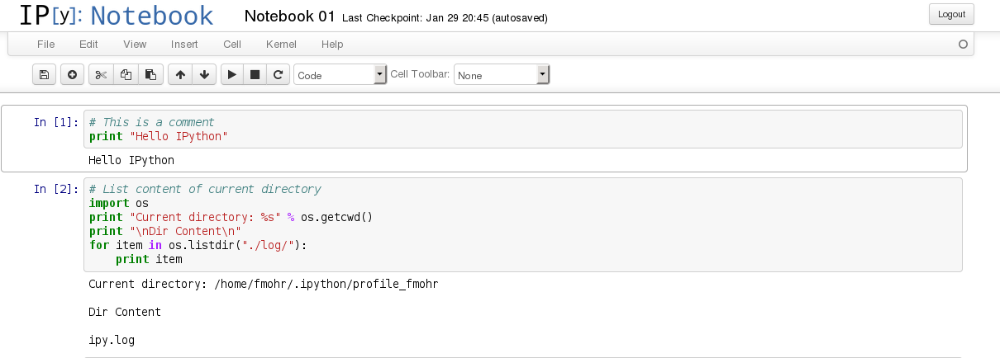
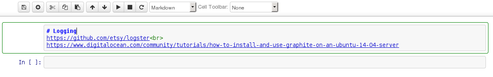
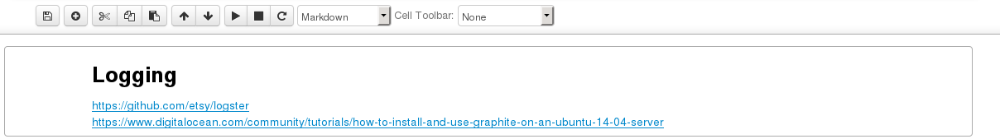
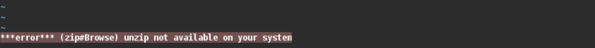
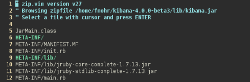

(W)BP#3 - HAProxy SNI, IPython, PostgreSQL and VIM

A new bucket post - I will change them from weekly to "whenever I feel like it". Mainly because I can't find the time to write actual posts between the bucket posts and I don't want this blog to consist solely of bucket posts.
SSL Client Certificate Support for Owncloud - Meanwhile on the interwebs, the support for client certificate authentication in Owncloud's desktop client "Mirall" is progressing. So I didn't do anything and I didn't learn anything... why is this even here?
Because I'm really looking forward to it! In fact, I'm planning on writing a blog post about the lack of support for additional authentication layers in desktop applications next week!
Also, I'm curious who will claim my the bounty! I assume @qknight.
Windows NTP Problems Round 2 - Apparently my "fix" from last weeks post didn't really fix my time issue with Windows 8. After a reboot, the clock is automatically set be off by one hour. Fortunately a friend of mine read the post and send me this link.
Dual Boot: Fix Time Differences Between Ubuntu And Windows
The problem lies in my dual boot setup of Kubuntu 14.04 and Windows 8.1. For me the solution was this command.
sudo sed -i 's/UTC=yes/UTC=no/' /etc/default/rcS
If you want to fix the problem using Windows, checkout the link above. There is more then one way to do this.
SNI with HAProxy - Last week I encountered a few problems with HAProxy and Server Name Indication, or SNI.
SNI is used by webservers, to distinguish between multiple SSL/TLS vhosts. In a normal HTTP setup, webservers can easily tell which site is requested. When TLS is in place, this becomes impossible without decrypting the traffic. In order to be able to have multiple websites hosted on the same IP and port (443), the client is required to send the hostname before transport encryption is established. That's exactly what SNI does.
Usually SNI allows you to create different vhosts like this (pseudo code)
www.example.com:443
www.example.com settings
private.example.com:443
private.example.com settings
In HAProxy however, it looks more like this (pseudo code)
*:443
use_backend www if sni is www.example.com
use_backend private if sni is private.example.com
The problem here is, that a lot of settings are done in the frontend, not the backend and therefore some settings cannot be set vhost specific. I found a solution to this problem, which I documented on serverfault.com. If I find the time, I'll write a blog post that will explain everything in more detail.
Seriously, why is this never documented??? - following a howto about something that includes PostgreSQL on Ubuntu 14.04 is always a pain. Mainly because these two lines seem to be missing every single time!
$ sudo useradd -U -s /bin/bash postgres
$ sudo pg_createcluster 9.3 main --start
source: askubuntu.com
IPython Notebook - Looking for a new web based notebook? I did! And I found "IPython Notebook" which is, to keep it short, awesome.
To showcase a few of the many features I like...
Run Python code

Use Markdown

Preview

VIM modelines
VIM modelines look something like this
and can be used to set VIM settings for specific files. By appending the modeline, VIM will adjust the global settings accordingly, unless modelines is disabled.
Modelines can be temporarily enabled by running :verbose set modeline or permanently by adding set modeling to your ~/.vimrc.
Note that modelines is off by default when editing as root..
VIM jar - VIM never ceases to amaze me, and the limit to things one can learn about it seems to be non-existent.
I looked for a tool to explore the contents of a jar file. As it turns out, it's just a zipped archive so unpack it and that's it - however, you could just open it with vim and have a look around without extracting the files first.
If you have unzip installed that is.

I usually use tar, so unzip is something I don't have installed by default but know I might just have enough reason to install it as well.

Kubuntu on L420 - Just a quick addition, I recently bought a Thinkpad L420 for 220€ on ebay. Unfortunately Kubuntu only booted with the acpi=off and nolapic flags. After a BIOS upgrade with this boot CD everything worked fine. Just in case anyone faces this issue as well.
Links - Interesting things I found on the webs